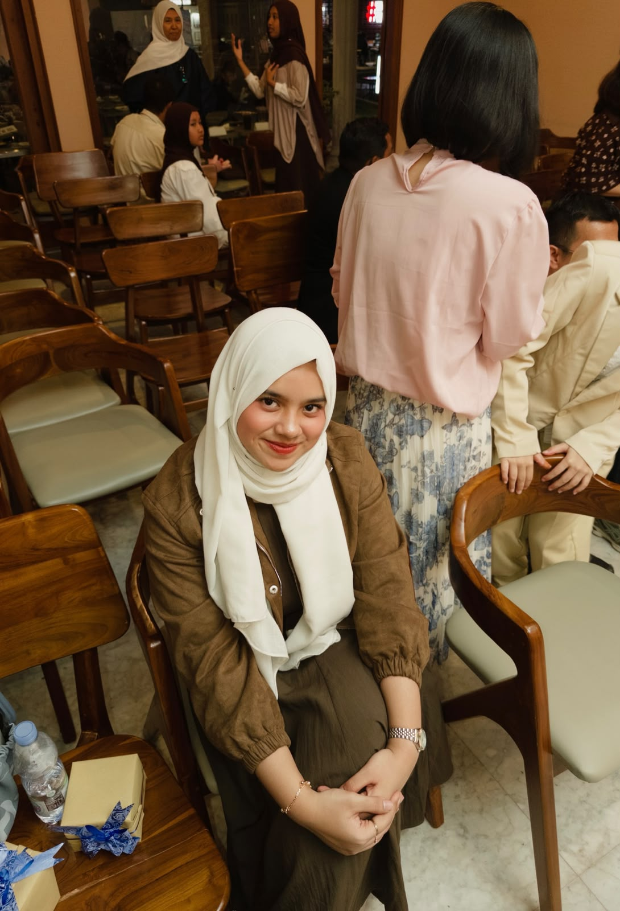

NAMA : Khalilah Salwa Ramadhani
NIM : 2511102441248
STATUS : Mahasiswa
TTL : Samarinda, 06 Oktober 2007
JURUSAN : Teknik Informatika
FAKULTAS : sains dan teknologi
ALAMAT : Jl. juanda 2 samarinda
UMUR : 19 tahun
HOBI : masak
CITA - CITA : Menjadi owner sebuah usaha
Berawal dari kegelisahan dan rasa penasaran di depan cermin, aku memutuskan untuk melangkah ke kursus MUA. Dari yang awalnya sering salah bikin alis, tangan gemetar pas megang kuas, sampai rela begadang latihan di atas wajah sendiri atau model pinjaman. Puji Tuhan, semua proses belajar dan rasa lelah itu akhirnya terbayar lunas. Sekarang, aku sudah bisa buka job sendiri, dipercaya klien untuk hari-hari spesial mereka, dan yang paling membanggakan: bisa pegang uang sendiri dari hasil kerja keras di dunia kecantikan yang aku cintai ini. Terima kasih untuk diri sendiri yang nggak pernah menyerah! ✨💄"
Bahan-Bahan 1. Lapisan Dasar (Crust): 150 gram biskuit marie regal (atau biskuit gandum/digestive biscuit) 70 gram mentega tawar, cairkan 2. Lapisan Cheesecake (Filling): 250 gram cream cheese (suhu ruang agar mudah dicampur) 100 ml whipping cream cair (atau 50 gram whip cream bubuk dicampur 100 ml air es) 50 gram gula halus (sesuaikan selera) 1 sdm air perasan lemon (memberikan sensasi segar khas cheesecake) 1 sdt ekstrak vanila 1 sdm gelatin bubuk (larutkan dengan 3 sdm air hangat) — Opsional, agar lebih padat dan kokoh. 3. Topping (Opsional): Selai buah (strawberry, blueberry, atau mangga) atau buah segar. Langkah-Langkah Pembuatan Langkah 1: Membuat Lapisan Dasar (Crust) Hancurkan Biskuit: Masukkan biskuit ke dalam kantong plastik bersih, lalu tumbuk atau haluskan menggunakan rolling pin sampai benar-benar halus (bisa juga menggunakan blender). Campurkan Mentega: Pindahkan biskuit halus ke mangkuk, lalu tuang mentega cair. Aduk rata hingga teksturnya seperti pasir basah dan bisa dikepal. Cetak: Masukkan adonan biskuit ke dalam loyang bongkar pasang (springform pan) atau wadah/cup saji. Padatkan permukaannya dengan bagian bawah gelas atau sendok hingga merata. Dinginkan: Masukkan loyang ke dalam kulkas selama 15–30 menit agar dasarnya mengeras. Langkah 2: Membuat Adonan Cheesecake Kocok Cream Cheese: Dalam mangkuk besar, mixer cream cheese dan gula halus dengan kecepatan sedang hingga lembut, halus, dan tidak bergerindil (sekitar 2–3 menit). Tambahkan Perisa: Masukkan air perasan lemon dan ekstrak vanila, lalu aduk rata. Kocok Whipping Cream: Di wadah terpisah, kocok whipping cream cair hingga mengembang dan kaku (soft peaks). Campurkan Semuanya: Masukkan whipping cream yang sudah dikocok ke dalam adonan cream cheese. Aduk perlahan menggunakan spatula dengan teknik folding (balik dari bawah ke atas) sampai tercampur rata. Tambahkan Gelatin (Opsional): Jika menggunakan gelatin, pastikan larutan gelatin sudah hangat-hangat kuku, lalu tuang perlahan ke dalam adonan sambil terus diaduk cepat agar tidak menggumpal. Langkah 3: Penyusunan dan Pendinginan Tuang Adonan: Keluarkan loyang yang berisi dasar biskuit dari kulkas. Tuang adonan cheesecake di atasnya, lalu ratakan permukaannya menggunakan spatula. Chilling: Tutup loyang dengan plastic wrap agar aromanya tidak tercampur dengan makanan lain di kulkas. Simpan di dalam lemari es minimal selama 4 jam (lebih baik semalaman agar set sempurna). Langkah 4: Penyajian Setelah mengeras, keluarkan cheesecake dari loyang dengan hati-hati. Beri topping selai buah atau buah segar di atasnya sesuai selera. Potong-potong menggunakan pisau tajam yang dicelupkan ke air hangat (lalu lap kering) agar potongan pinggirannya rapi. Cheesecake siap dinikmati! Tips Tambahan: Jika ingin membuat versi yang dipanggang (Baked Cheesecake), Anda bisa menggunakan bahan tambahan seperti telur dan sour cream, lalu memanggangnya menggunakan teknik water bath (loyang cheesecake diletakkan di atas loyang lain yang berisi air panas) pada suhu sekitar 160°C selama kurang lebih 50-60 menit. Apakah Anda ingin mencoba resep versi panggang atau tetap dengan versi no-bake? Selamat mencoba dan semoga berhasil membuat cheesecake yang lezat!